Asca_dec_count_data.RmdTo illustrate the use of gASCA in the analysis of count data we will consider a synthetic dataset which is available as a part of the package installation. This vignette will be also used to show how to use gg-style plotting to visualize the results of the gASCA analyses
The synthetic dataset was simulated to mimic the results of a hypothetical experiment where the abundance of 15 species is measured over time across different treatments, with the following design:
s1 .. s15)The example dataset was designed to have two latent variables (LV) for the time factor and one for the treatment.
Considering the 15 variables:
s1
and s2 mirrors LV1, s3 and s4 are
linked to LV2.s5 and s6 are affected by the treatment
factor.s7 and s10 are also sensitive to the two
LVs of the interaction. In other words, for them the effect of treatment
depends on time.The dataset is included in the package as a two element list
containing the count matrix synth_count_data$counts and a
data frame holding the association between the 150 samples and the
design factors (synth_count_data$design).
A detailed description of how the synthetic dataset was simulated is included in one of the package vignettes.
## load the libraries
library(gASCA)
## load the dataset
data("synth_count_data")
## show a compact representation of the structure of the dataset
str(synth_count_data)## List of 2
## $ counts: int [1:150, 1:15] 0 1 4 2 1 2 2 0 1 1 ...
## ..- attr(*, "dimnames")=List of 2
## .. ..$ : NULL
## .. ..$ : chr [1:15] "s1" "s2" "s3" "s4" ...
## $ design:'data.frame': 150 obs. of 2 variables:
## ..$ time : chr [1:150] "t0" "t0" "t0" "t0" ...
## ..$ treatment: chr [1:150] "B1" "B1" "B1" "B1" ...In this synthetic dataset we are dealing with a design with 5 time points and three treatments
## time
unique(synth_count_data$design$time)## [1] "t0" "t1" "t2" "t3" "t4"
## time
unique(synth_count_data$design$treatment)## [1] "B1" "B2" "B3"The following plot shows the distribution of the counts for variable
s1 as a function of the design factors
data_df <- cbind.data.frame(synth_count_data$design,synth_count_data$counts)
stripchart(s1 ~ time, data = data_df[data_df$treatment =="B1",], vertical = TRUE, pch = 1, method = "jitter",
col = "orange", main = "S1", ylab = "Counts")
stripchart(s1 ~ time, data = data_df[data_df$treatment =="B2",], vertical = TRUE, pch = 1, method = "jitter", col = "steelblue", add = TRUE)
stripchart(s1 ~ time, data = data_df[data_df$treatment =="B3",], vertical = TRUE, pch = 1, method = "jitter", col = "red", add = TRUE)
legend("topleft", legend=c("Treat B1", "Treat B2", "Treat B3"),
col=c("orange","steelblue","red"), lty = 1, bty = "n")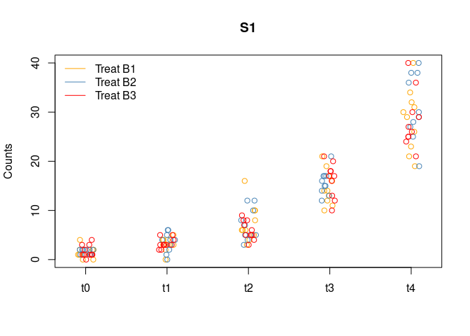
The effect of time on this variable is clear.
The function which performs the gASCA decomposition is
ASCA_decompose and its results are organized in a list. To
run the function it is necessary to provide:
matrix or a data.frame with the
counts;data.frame with the association between the samples
and the design. Beware that numeric columns will results in a
decomposition error!list with the parameters which will be passed to the
glm call;glm;The synthetic data consists of counts so the natural choice is to run
a Poisson glm. The formula specifies a 3 term decomposition accounting
for the effects of time, treatment and their
interaction. Within ASCA-decompose the formula has to be
specified following the standard glm syntax.
## perform the decomposition
asca0 <- ASCA_decompose(
d = synth_count_data$design,
x = synth_count_data$counts,
f = "time + treatment + time:treatment",
glm_par = list(family = poisson()))Let’s give a look to the structure of the asca0
object
str(asca0)## List of 14
## $ decomposition:List of 3
## ..$ time : num [1:150, 1:15] -1.49 -1.49 -1.49 -1.49 -1.49 ...
## .. ..- attr(*, "dimnames")=List of 2
## .. .. ..$ : chr [1:150] "1" "2" "3" "4" ...
## .. .. ..$ : chr [1:15] "s1" "s2" "s3" "s4" ...
## ..$ treatment : num [1:150, 1:15] -0.0334 -0.0334 -0.0334 -0.0334 -0.0334 ...
## .. ..- attr(*, "dimnames")=List of 2
## .. .. ..$ : chr [1:150] "1" "2" "3" "4" ...
## .. .. ..$ : chr [1:15] "s1" "s2" "s3" "s4" ...
## ..$ time:treatment: num [1:150, 1:15] -0.0759 -0.0759 -0.0759 -0.0759 -0.0759 ...
## .. ..- attr(*, "dimnames")=List of 2
## .. .. ..$ : chr [1:150] "1" "2" "3" "4" ...
## .. .. ..$ : chr [1:15] "s1" "s2" "s3" "s4" ...
## $ mu : Named num [1:15] 1.93 3.02 4.01 5 6 ...
## ..- attr(*, "names")= chr [1:15] "s1" "s2" "s3" "s4" ...
## $ residuals : num [1:150, 1:15] -1.4 -0.4 2.6 0.6 -0.4 ...
## ..- attr(*, "dimnames")=List of 2
## .. ..$ : chr [1:150] "1" "2" "3" "4" ...
## .. ..$ : chr [1:15] "s1" "s2" "s3" "s4" ...
## $ prediction : num [1:150, 1:15] 0.336 0.336 0.336 0.336 0.336 ...
## ..- attr(*, "dimnames")=List of 2
## .. ..$ : chr [1:150] "1" "2" "3" "4" ...
## .. ..$ : chr [1:15] "s1" "s2" "s3" "s4" ...
## $ pseudoR2 : Named num [1:15] 0.907 0.958 0.964 0.978 0.998 ...
## ..- attr(*, "names")= chr [1:15] "s1" "s2" "s3" "s4" ...
## $ glm_par :List of 1
## ..$ family:List of 12
## .. ..$ family : chr "poisson"
## .. ..$ link : chr "log"
## .. ..$ linkfun :function (mu)
## .. ..$ linkinv :function (eta)
## .. ..$ variance :function (mu)
## .. ..$ dev.resids:function (y, mu, wt)
## .. ..$ aic :function (y, n, mu, wt, dev)
## .. ..$ mu.eta :function (eta)
## .. ..$ initialize: expression({ if (any(y < 0)) stop("negative values not allowed for the 'Poisson' family") n <- rep.int(1, nobs| __truncated__
## .. ..$ validmu :function (mu)
## .. ..$ valideta :function (eta)
## .. ..$ simulate :function (object, nsim)
## .. ..- attr(*, "class")= chr "family"
## $ res_type : chr "response"
## $ varimp : num [1:15, 1:3] 12.841 11.938 7.444 7.187 0.118 ...
## ..- attr(*, "dimnames")=List of 2
## .. ..$ : chr [1:15] "s1" "s2" "s3" "s4" ...
## .. ..$ : chr [1:3] "time" "treatment" "time:treatment"
## $ terms_L2 : Named num [1:3] 20.4 18 14.8
## ..- attr(*, "names")= chr [1:3] "time" "treatment" "time:treatment"
## $ d :'data.frame': 150 obs. of 2 variables:
## ..$ time : chr [1:150] "t0" "t0" "t0" "t0" ...
## ..$ treatment: chr [1:150] "B1" "B1" "B1" "B1" ...
## $ x :'data.frame': 150 obs. of 15 variables:
## ..$ s1 : int [1:150] 0 1 4 2 1 2 2 0 1 1 ...
## ..$ s2 : int [1:150] 3 2 7 5 8 4 6 7 6 4 ...
## ..$ s3 : int [1:150] 19 23 37 38 37 23 31 29 24 29 ...
## ..$ s4 : int [1:150] 75 67 89 67 74 68 60 70 74 64 ...
## ..$ s5 : int [1:150] 95 99 100 91 94 95 107 103 85 100 ...
## ..$ s6 : int [1:150] 86 100 106 86 106 99 117 93 108 112 ...
## ..$ s7 : int [1:150] 344 371 330 350 324 332 337 373 340 335 ...
## ..$ s8 : int [1:150] 123 121 132 120 125 115 142 155 119 111 ...
## ..$ s9 : int [1:150] 25 15 19 19 14 16 12 24 15 20 ...
## ..$ s10: int [1:150] 6 7 4 6 8 10 9 4 6 7 ...
## ..$ s11: int [1:150] 384 378 411 407 428 394 400 413 416 422 ...
## ..$ s12: int [1:150] 141 131 129 166 142 154 146 139 170 134 ...
## ..$ s13: int [1:150] 2959 2951 2953 3008 2988 3045 2968 3032 2981 2990 ...
## ..$ s14: int [1:150] 121 155 126 167 130 157 155 117 139 141 ...
## ..$ s15: int [1:150] 16 19 21 26 19 21 17 20 26 22 ...
## $ f : chr "time + treatment + time:treatment"
## $ combined : NULL
## $ linkinv :function (eta)For a detailed description of the elements of the list the reader
could refer to the documentation. The main output of the function is a
list which holds the result of the decomposition
(asca0$decomposition). Each element of this list is a
matrix containing the expected values estimated by the glm model of the
individual variables. Each decomposition matrix holds samples as rows
and variables as columns. Among the other terms of the output we would
like to highlight:
pseudoR2: a vector holding the pseudo
R2 of the individual univariate models, which can be
used to assess the level of fit of the proposed decomposition on each
individual variable; varimp: a matrix holding the
importance of each variable for the different decomposition terms. The
variable importance is defined as the norm of the vector composed by the
estimated expected values. It is important to point out that this type
of variable importance can be biased in presence of log link functions
and for variables showing large fraction of zeroes;
*terms_L2: a vector holding the Frobenius norm of the
decomposition matrices.
\[ \lVert Y \rVert\_{Frobenius} = \sqrt{\sum\_{ij} \lvert y\_{ij} \rvert^2} \]
The L2-norm and the varimp can be used to compare the
importance of the different variables and decomposition terms. Due to
the characteristics of the matrix norm, this measure of importance is
also biased for non gaussian link functions and large fraction of
zeroes.
For a detailed description of the individual elements of the decomposition list the user can refer to the package documentation.
In terms of matrix algebra, the ASCA decomposition of a matrix X can be interpreted as a data model
Y = YA + YB + YC + … + E
The significance of this decomposition can then be assessed by constructing an empirical null distribution of the norms of each term by repeatedly (and independently) permuting the design labels. The rationale behind this idea is to assess how likely is to obtain the observed norms only by chance. Permutation can be applied both to the L2-norm of the individual terms and to the estimates of variable importance. Unfortunately, as already discussed, in the case of count data, this type of approach may be biased in presence of a large fraction of zeroes. As a partial alternative, here we propose to use the same strategy to used assess the responsiveness of the individual variables to the model in terms of pseudo R2, defined as
Rpseudo2 = 1 − deviance_residual/deviance_*nul**l*
As for the conventional R2, values closer to 1 indicate a better fit. Conversely, values closer to 0 are obtained if the residual deviance of the model is comparable with the deviance of the null model and this is the indication that the proposed model is not a clear improvement in comparison to the null model.
The idea is to identify which variables are significantly affected by the design and then to limit the multivariate decomposition to them.
In the gASCA package the permutation based approach is
provided by the ASCA_permutation function, which requires
as input the results of ASCA_decompose, the number of
independent permutations (100 by default) and the empirical quantile
used to judge the significance (0.95 by default).
Let’s now run the validation
The asca0_validation holds the quantiles of the
empirical null distribution obtained by permutation. The following plot
shows the results of the significance test of the L2-norm of the
individual terms.
barplot(asca0$terms_L2, col = "steelblue", main = "Term L2 norm", border = NA)
barplot(asca0_validation$L2_qt, col = "#8f1402", border = NA, add = TRUE)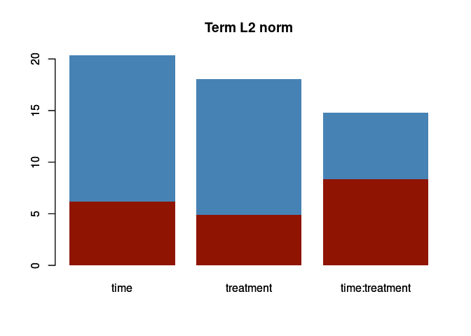
The red rectangle indicate the 95 percentile of the null distribution of the norm for each term. In this case the decomposition turns out to be significant for all terms, and all three design factors show a comparable relevance in the decomposition.
In terms of the variable importance for the three factors, instead:
par(mfrow = c(1,3))
barplot(asca0$varimp[,1], col = "steelblue", main = "Variable importance: time", border = NA)
barplot(asca0_validation$varimp_qt[,1], col = "#8f1402", border = NA, add = TRUE)
barplot(asca0$varimp[,2], col = "steelblue", main = "Variable importance: treatment", border = NA)
barplot(asca0_validation$varimp_qt[,2], col = "#8f1402", border = NA, add = TRUE)
barplot(asca0$varimp[,3], col = "steelblue", main = "Variable importance: time:treatment", border = NA)
barplot(asca0_validation$varimp_qt[,3], col = "#8f1402", border = NA, add = TRUE)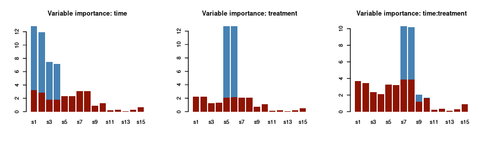
As before, the red bars indicate the empirical quantile of the variable importance upon permutation of the design. The picture we get with this analysis is in line with the characteristics of the simulated dataset: only the first four species are significantly responding to the time factor; s5 and s6, instead are important for treatment and s7 .. s10 for the interaction.
The following plot shows the result of the model fit assessment in terms of pseudo R2:
barplot(asca0$pseudoR2, col = "steelblue", main = "Univariate model fit", border = NA, ylab = "pseudo R2", ylim = c(0,1))
barplot(asca0_validation$R2_qt, col = "#8f1402", border = NA, add = TRUE)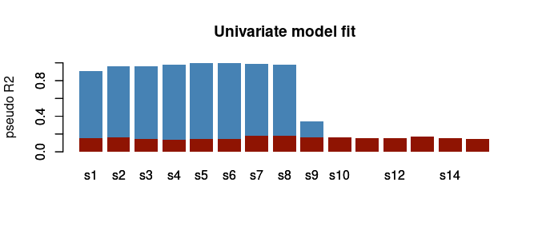
Also here the results are coherent with the design of the synthetic dataset: the first 10 variables shows a significant pseudo-R2 and this is not only indicating that they are significantly responding to the design, but also that the proposed model is capturing a large fraction of the data variability. It is also interesting to observe that, not unexpectedly, the univariate null quantiles are similar for all the 10 variables.
As already discussed, the previous results can be used to restrict
the analysis to the responsive variables. In the gASCA
package the decomposition can be trimmed by using the
ASCA_trim_vars() function:
focus_dec <- ASCA_trim_vars(asca0$decomposition, keep = 1:10)Let’s now focus on the three decomposition matrices in terms of their multivariate latent factors. Depending on the term, these LV can be interpreted as “eigentrends” (for time) or “eigentreatments” (for treatment) and they are actually what we would like to interpret. Remember that the rank of the matrix associated to each factor is determined by the number of levels of each factor because the decomposition matrices are constructed with the model expected values. The number of LVs will be then equal to the number of factors minus one.
As an example, this is the set of predicted values for the time
factor of variable s1
plot(asca0$decomposition$time[,"s1"], ylab = "I", xlab = "Sample Index", pch = 19, col = "steelblue")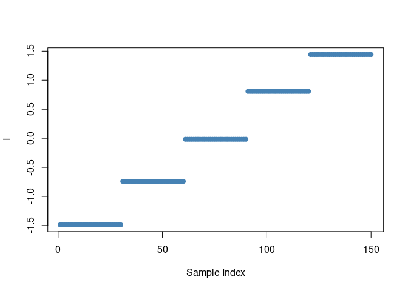
The presence of a limited number of constant values is coherent with the levels of the time factor, while the scale on the y axis shows that predictions are performed in the linear predictor space. Since the time factor has 5 levels the rank of the matrix will be four. We then expect four eigentrends. Their relative importance is proportional to the individual eigenvalues.
The SVD decomposition of the ASCA array is performed by the
ASCA_svd function.
asca0_svd <- ASCA_svd(focus_dec)Also here the result is a list with each element holding the results
of the svd of the single decomposition terms performed by using the
prcomp function of base R. As in a usual PCA analysis, the
amount of explained variability (square of the standard deviation) can
be used to identify how many eigentrends are needed to present an
informative representation of the overall matrix. This type of
representation is known as scree plot.
Let’s first consider the time factor. The following screeplot can be used to identify the number of relevant eigentrends:
plot(asca0_svd$time, col = "#4682b490", main = "Screeplot: time", npcs = 4)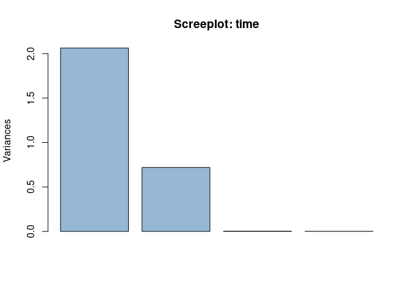
Apparently two LVs are able to capture the global structure of the data. Let’s visualize the two eigentrends
## reduce to a set of individual values compensating for potential numeric inaccuracies
eigentrends <- unique(cbind.data.frame(time = synth_count_data$design$time,
LV1 = round(asca0_svd$time$x[,"PC1"],2),
LV2 = round(asca0_svd$time$x[,"PC2"],2)))
eigentrends## time LV1 LV2
## 1 t0 -2.05 0.99
## 31 t1 -1.02 -0.52
## 61 t2 0.03 -1.01
## 91 t3 1.07 -0.49
## 121 t4 1.97 1.03
par(mfrow = c(1,2))
plot(LV1~ seq_along(LV1), data = eigentrends,
xaxt = 'n', type = "b", col = "steelblue", pch = 19, xlab = "time", cex = 1, main = "Eigentrend #1")
axis(1, at=seq_along(eigentrends$LV1), labels=eigentrends$time)
plot(LV2~ seq_along(LV2), data = eigentrends,
xaxt = 'n', type = "b", col = "orange", pch = 19, xlab = "time", cex = 1, main = "Eigentrend #2")
axis(1, at=seq_along(eigentrends$LV2), labels=eigentrends$time)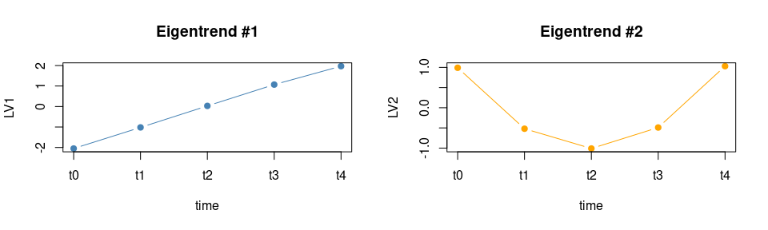
As expected, the first eigentrend is characterized by a steady increase which contrasts with the pattern of the second LV with a “U” shaped profile. In the synthetic data the actual trend of LV2 for the time factor is opposite, but this simply results from the sign indetermination of PCA. The loadings will tell which variables are mainly associated to them.
par(mfrow = c(1,2))
barplot(asca0_svd$time$rotation[,1], col = "steelblue", main = "Loadingsplot: eigentrend #1")
barplot(asca0_svd$time$rotation[,2], col = "orange", main = "Loadingsplot: eigentrend #2")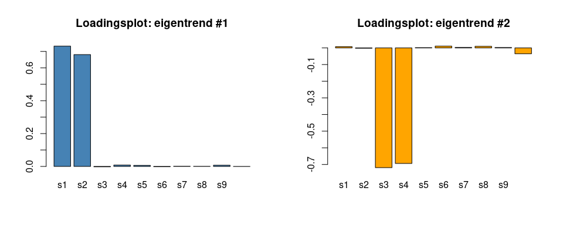 In keeping with the characteristics of the synthetic data, s1 and s2 are contributing strongly to the increasing eigentrend, while s3 and s4 mainly characterize the second LV. Also the intensity of the loadings correctly reflects the values used in the generation of the synthetic dataset. Further supporting the coherence of these results, below we show the real time trends of the measured values for s1 and s3:
par(mfrow = c(1,2))
stripchart(s1 ~ time, data = data_df, vertical = TRUE, pch = 1, method = "jitter",
col = "steelblue", main = "S1", ylab = "Counts")
stripchart(s3 ~ time, data = data_df, vertical = TRUE, pch = 1, method = "jitter",
col = "orange", main = "S3", ylab = "Counts")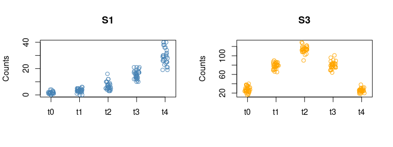
The treatment factor has 3 levels so a maximum of 2 LVs is expected to be relevant. As before, the screeplot will highlight the individual contribution of the two eigentreatments
plot(asca0_svd$treatment, col = "#4682b490", main = "Screeplot: treatment", npcs = 2)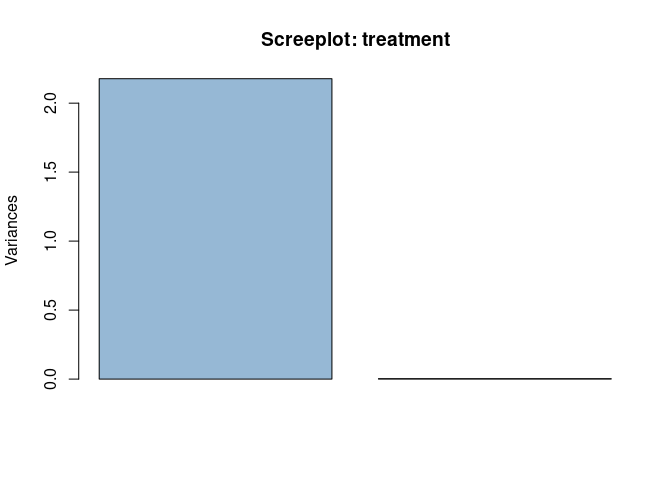
Nonetheless, as expected, only one LV is relevant here. In the following plot the profile of the eigentreatment and its loadings are shown:
## reduce to a set of individual values compensating for potential numeric inaccuracies
eigentreatments <- unique(cbind.data.frame(treatment = synth_count_data$design$treatment,
LV1 = round(asca0_svd$treatment$x[,"PC1"],2)))
eigentreatments## treatment LV1
## 1 B1 -2.00
## 11 B2 1.49
## 21 B3 0.50
par(mfrow = c(1,2))
barplot(LV1~treatment, data = eigentreatments, col = "steelblue", main = "Eigentreatment #1")
barplot(asca0_svd$treatment$rotation[,1], col = "steelblue", main = "Loadingsplot: eigentrend #1")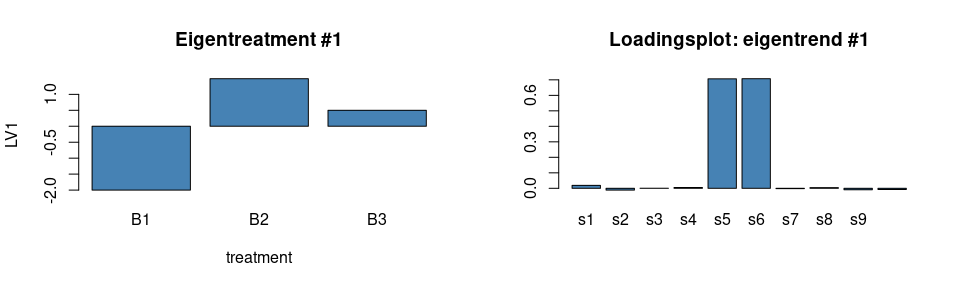
As before, this is perfectly in line with the characteristics of the synthetic dataset.
The last element of the decomposition is the interaction. Here the number of possible LVs is large, let’s start with the screeplot
plot(asca0_svd$`time:treatment`, col = "#4682b490", main = "Screeplot: interaction")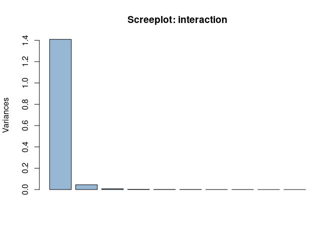
Here, 2 components are able to capture almost all the variance, with the first eigenvector showing a prominent role. Let’s look to the shape of the two components:
## reduce to a set of individual values compensating for potential numeric inaccuracies
eigentrends_int <- unique(cbind.data.frame(time = synth_count_data$design$time,
treatment = synth_count_data$design$treatment,
LV1 = round(asca0_svd$`time:treatment`$x[,"PC1"],2),
LV2 = round(asca0_svd$`time:treatment`$x[,"PC2"],2)))
eigentrends_int## time treatment LV1 LV2
## 1 t0 B1 -1.16 0.21
## 11 t0 B2 -1.16 -0.28
## 21 t0 B3 2.32 0.06
## 31 t1 B1 -0.60 -0.18
## 41 t1 B2 -0.61 0.34
## 51 t1 B3 1.21 -0.16
## 61 t2 B1 0.62 0.16
## 71 t2 B2 0.58 -0.39
## 81 t2 B3 -1.20 0.24
## 91 t3 B1 1.17 -0.16
## 101 t3 B2 1.21 0.30
## 111 t3 B3 -2.38 -0.13
## 121 t4 B1 -0.02 -0.03
## 131 t4 B2 -0.03 0.04
## 141 t4 B3 0.05 -0.01
par(mfrow = c(1,2))
with(eigentrends_int[eigentrends_int$treatment == "B1",], plot(LV1 ~ as.numeric(factor(time)),
xaxt = 'n', type = "b", col = "orange", pch = 19, xlab = "time", cex = 1, main = "Eigentrend #1", ylim = c(-2.5,2.5)))
with(eigentrends_int[eigentrends_int$treatment == "B2",], lines(LV1 ~ as.numeric(factor(time)),
type = "b", col = "steelblue", pch = 19, xlab = "time", cex = 1))
with(eigentrends_int[eigentrends_int$treatment == "B3",], lines(LV1 ~ as.numeric(factor(time)),
type = "b", col = "red", pch = 19, xlab = "time", cex = 1))
axis(1, at=as.numeric(factor(unique(eigentrends_int$time))), labels=levels(factor(eigentrends_int$time)))
with(eigentrends_int[eigentrends_int$treatment == "B1",], plot(LV2 ~ as.numeric(factor(time)),
xaxt = 'n', type = "b", col = "orange", pch = 19, xlab = "time", cex = 1, main = "Eigentrend #2", ylim = c(-1.5,1.5)))
with(eigentrends_int[eigentrends_int$treatment == "B2",], lines(LV2 ~ as.numeric(factor(time)),
type = "b", col = "steelblue", pch = 19, xlab = "time", cex = 1))
with(eigentrends_int[eigentrends_int$treatment == "B3",], lines(LV2 ~ as.numeric(factor(time)),
type = "b", col = "red", pch = 19, xlab = "time", cex = 1))
axis(1, at=as.numeric(factor(unique(eigentrends_int$time))), labels=levels(factor(eigentrends_int$time)))
legend("bottomright", legend=c("Treat B1", "Treat B2", "Treat B3"),
col=c("orange","steelblue","red"), lty = 1, bty = "n", cex = 0.8)Also in this case, results are in line with the characteristics of the synthetic data. The larger eigentrend shows a different temporal trend of B3 in comparison to the other two treatments. LV2, instead, differentiates B2 from B1 and B3. Interestingly, both the magnitude of the scores and the variable importance indicate that the first eigentrend has a larger impact on the structure of the data. In terms of loadings:
par(mfrow = c(1,2))
barplot(asca0_svd$`time:treatment`$rotation[,1], col = "steelblue", main = "Loadingsplot: eigentrend #1")
barplot(asca0_svd$`time:treatment`$rotation[,2], col = "orange", main = "Loadingsplot: eigentrend #2")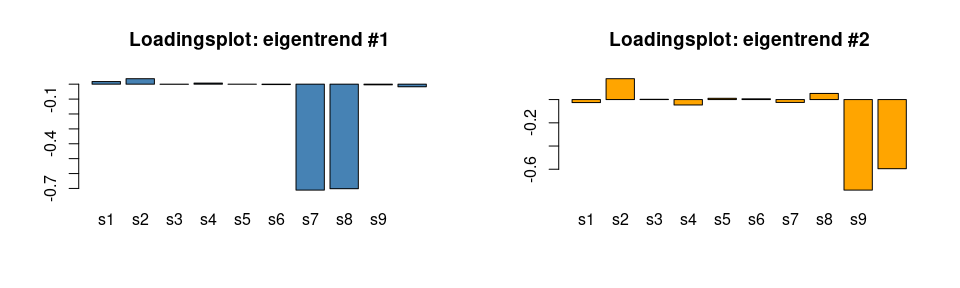
The reconstruction follows the structure of the data, with the exception being the direction (sign) of the effect, due to the sign indetermination of PCA.
The function ASCA_combine_terms allows the combination
of different factor matrices. The function accepts as input the output
of ASCA_decomposition and a character vector specifying
which terms should be combined.
## combine two terms
asca0_comb <- ASCA_combine_terms(asca0, c("time","time:treatment"))
## perform the svd of the combined decomposition removing unresponsive variables
asca0_comb_svd <- ASCA_svd(ASCA_trim_vars(asca0_comb$decomposition, keep = 1:10))Let’s now focus on the LVs of the combined terms.
## here we use the base scree plot
plot(asca0_comb_svd$`time+time:treatment`, main = "time + time:treatment", col = "steelblue")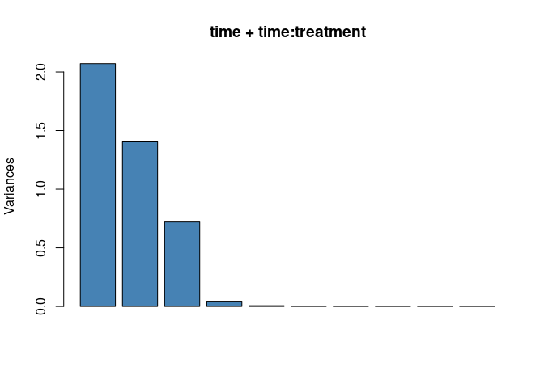
The screeplot shows that the structure of the combined term is well characterized by three latent variables which are shown in the following plot:
## reduce to a set of individual values compensating for potential numeric inaccuracies
eigencomb <- unique(cbind.data.frame(synth_count_data$design,
LV1 = round(asca0_comb_svd$`time+time:treatment`$x[,"PC1"],2),
LV2 = round(asca0_comb_svd$`time+time:treatment`$x[,"PC2"],2),
LV3 = round(asca0_comb_svd$`time+time:treatment`$x[,"PC3"],2)))
eigencomb## time treatment LV1 LV2 LV3
## 1 t0 B1 -2.18 -1.04 0.94
## 11 t0 B2 -2.21 -1.03 1.02
## 21 t0 B3 -1.74 2.42 1.01
## 31 t1 B1 -1.12 -0.47 -0.56
## 41 t1 B2 -1.04 -0.48 -0.51
## 51 t1 B3 -0.88 1.33 -0.49
## 61 t2 B1 0.20 0.63 -0.97
## 71 t2 B2 0.04 0.60 -1.06
## 81 t2 B3 -0.16 -1.17 -1.00
## 91 t3 B1 1.12 1.08 -0.50
## 101 t3 B2 1.21 1.10 -0.43
## 111 t3 B3 0.85 -2.47 -0.54
## 121 t4 B1 1.97 -0.19 1.10
## 131 t4 B2 2.00 -0.19 0.98
## 141 t4 B3 1.92 -0.11 1.02
par(mfrow = c(1,3))
with(eigencomb[eigencomb$treatment == "B1",], plot(LV1 ~ as.numeric(factor(time)),
xaxt = 'n', type = "b", col = "orange", pch = 19, xlab = "time", cex = 1, main = "Eigentrend #1", ylim = c(-3.5,2.5)))
with(eigencomb[eigencomb$treatment == "B2",], lines(LV1 ~ as.numeric(factor(time)),
type = "b", col = "steelblue", pch = 19, xlab = "time", cex = 1))
with(eigencomb[eigencomb$treatment == "B3",], lines(LV1 ~ as.numeric(factor(time)),
type = "b", col = "red", pch = 19, xlab = "time", cex = 1))
axis(1, at=as.numeric(factor(unique(eigencomb$time))), labels=levels(factor(eigencomb$time)))
legend("bottomright", legend=c("Treat B1", "Treat B2", "Treat B3"),
col=c("orange","steelblue","red"), lty = 1, bty = "n")
with(eigencomb[eigencomb$treatment == "B1",], plot(LV2 ~ as.numeric(factor(time)),
xaxt = 'n', type = "b", col = "orange", pch = 19, xlab = "time", cex = 1, main = "Eigentrend #2", ylim = c(-3.5,2.5)))
with(eigencomb[eigencomb$treatment == "B2",], lines(LV2 ~ as.numeric(factor(time)),
type = "b", col = "steelblue", pch = 19, xlab = "time", cex = 1))
with(eigencomb[eigencomb$treatment == "B3",], lines(LV2 ~ as.numeric(factor(time)),
type = "b", col = "red", pch = 19, xlab = "time", cex = 1))
axis(1, at=as.numeric(factor(unique(eigencomb$time))), labels=levels(factor(eigencomb$time)))
with(eigencomb[eigencomb$treatment == "B1",], plot(LV3 ~ as.numeric(factor(time)),
xaxt = 'n', type = "b", col = "orange", pch = 19, xlab = "time", cex = 1, main = "Eigentrend #3", ylim = c(-3.5,2.5)))
with(eigencomb[eigencomb$treatment == "B2",], lines(LV3 ~ as.numeric(factor(time)),
type = "b", col = "steelblue", pch = 19, xlab = "time", cex = 1))
with(eigencomb[eigencomb$treatment == "B3",], lines(LV3 ~ as.numeric(factor(time)),
type = "b", col = "red", pch = 19, xlab = "time", cex = 1))
axis(1, at=as.numeric(factor(unique(eigencomb$time))), labels=levels(factor(eigencomb$time)))These are, instead, the plots of the loadings:
par(mfrow = c(1,3))
barplot(asca0_comb_svd$`time+time:treatment`$rotation[,1], col = "steelblue", main = "Loadingsplot: eigentrend #1")
barplot(asca0_comb_svd$`time+time:treatment`$rotation[,2], col = "steelblue", main = "Loadingsplot: eigentrend #2")
barplot(asca0_comb_svd$`time+time:treatment`$rotation[,3], col = "steelblue", main = "Loadingsplot: eigentrend #3")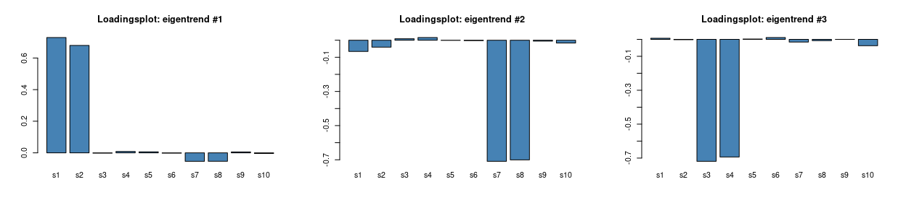
coherently with what was observed for the time factor, the first LV of the combined decomposition shows a steady increase which is now modulated by treatment B3 in the interaction term. The inspection of the loadings supports this interpretation, s1 and s2 are indeed - by design - the species showing an increase over time. s7 and s8 are also partially contributing to this trend and their contribution differentiates B3 from B1 and B2. LV2 turns out to be similar to LV1 of the interaction term discussed previously. Similarly, s7 and s8 are the most influential variables, but now a residual contribution of s1 and s2 is also visible, which accounts for the slight overall time trend visible in the three treatment traces. The last LV is mirroring the trend visible in the LV2 of the time factor, this is clearly confirmed from the loadings plot.